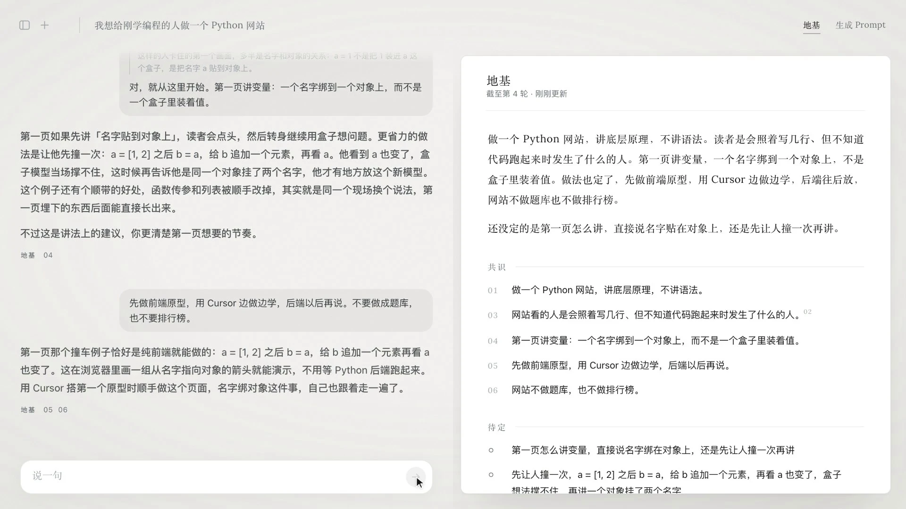

药明生物
主导 GAP Analysis AI 解决方案的产品定义与系统架构，完成原型及 MVP 验证。
AI 产品经理 2027 届硕士
企业中的产品实践，与工作之外的独立设计，收录在这份作品集里。可以观看演示、试用原型，也可以进一步了解方案形成时的观察与取舍。
用自然语言构建数据工作流，在画布上核对、理解和修改。
独立产品设计与实现
 局部预览
局部预览暂时无法播放，请使用下方独立播放入口。
企业 Agent 运行时 · 概念宣传片
矩阵起源 · 产品研究与概念影片创作
暂时无法播放，请使用下方独立播放入口。
生物药工艺转移中的参数提取、专家核验与风险研判。
药明生物 · 企业 AI 解决方案
50h+ → 约 20min
同一历史项目的单客户参数提取耗时对照；
业务专家评估识别率 90%+。
接种密度 · 原型核验示例
原文手写栏的读图结果与当前值不一致，修正先保留为待确认建议。
主导产品定义、系统架构与原型验证。
查看方案与材料在对话里把想法说清，定下来的沉进地基，需要时一键凝成 Prompt，交给执行。
独立产品设计与实现

局部预览暂时无法播放，请使用下方独立播放入口。
按思路组织智能体的运行信息，完成后沿答案追溯依据。
信息架构与交互设计
切换行动时保留判断；切换判断时，所属执行信息一起退出。
查看设计独立产品 · AI 社交引荐
两个人所处的领域不同，却可能一直在思考相似的问题。AfterSpark 从长期对话中寻找这种联系，经多 Agent 审议和双方同意后，尝试把讨论带向共同交流。
阅读设计与机制主导 GAP Analysis AI 解决方案的产品定义与系统架构，完成原型及 MVP 验证。
端到端负责工作流模块的产品定义、交互设计与验收；参与平台体验迭代，设计智能体运行过程的信息呈现。
YouWare、Kimi 与 AI 的现实应用。
阅读文章